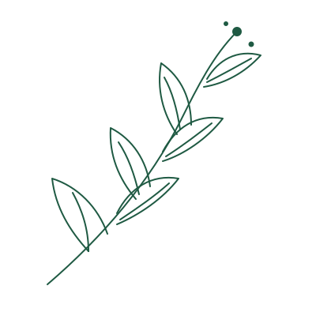
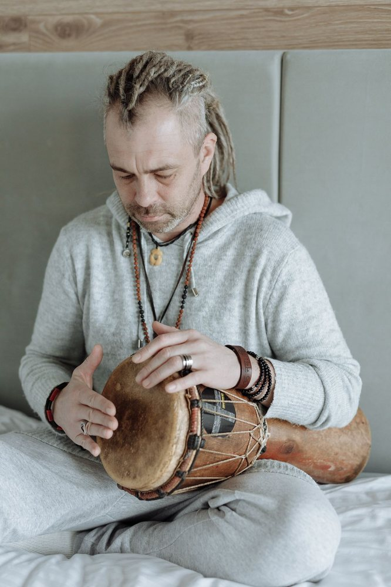
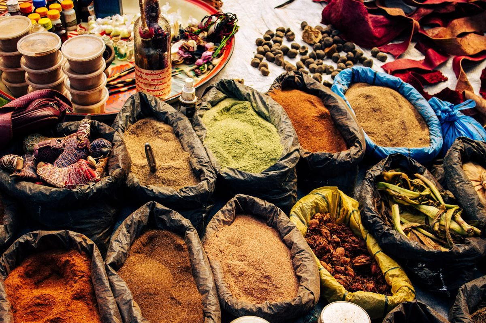

Leadership · Paix
L'Art de la Paix
Devenir coach en dignité et artisan de paix dans sa communauté.
150 000 FCFADécouvrir L'Art de la Paix

Des formations certifiantes, 100 % en ligne et accréditées, pensées pour l'Afrique et sa diaspora — au croisement de la thérapie, de l'écologie et du leadership.
Devenir coach en dignité et artisan de paix dans sa communauté.

La musique et les vibrations pour rétablir l'équilibre du corps et de l'esprit.

Savoirs ancestraux et vertus thérapeutiques des épices d'Afrique.

Prise de parole, influence et leadership au service du bien commun.
Toutes nos formations sont certifiantes, accréditées par l'AATHCI et accessibles en ligne partout en Afrique et dans la diaspora.
Vous choisissez votre formation et recevez votre kit pédagogique complet dès l'inscription.
E-learning asynchrone : vous avancez à votre rythme, où que vous soyez.
Carnet de progression personnalisé et fiches pratiques directement applicables.
Certificat accrédité AATHCI sous 72 h, puis accès à la communauté BMT.
Accréditation AATHCI — Association des Arts Thérapeutes et Praticiens Holistiques de Côte d'Ivoire · N° AATHCI-BMTGA-IA-2025-CI-19
« Former une nouvelle génération de leaders et de bâtisseurs d'avenir pour l'Afrique et pour le monde. »
Bahiya A. Marie-Thérèse
Entrepreneure sociale · Régente art-thérapeute · Coach internationale · Fondatrice d'écosystèmes à impact
Formée à Harvard, Stanford, Yale, Wharton, Johns Hopkins, Northwestern et au sein de programmes des Nations Unies (UNITAR, UN CC:Learn), elle a fondé BMT Green Academy pour rendre ces standards accessibles au continent.
Un conseiller pédagogique vous recontacte sur WhatsApp pour valider votre choix, les modalités de paiement et votre date de démarrage.